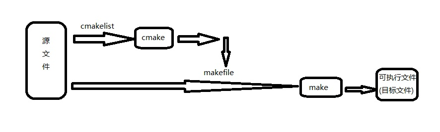

编译器与编译工具
现有编译工具gamke,make,nmake,dmake,cmake异同
gmake是GNUMake的缩写。Linux系统环境下的make就是GNUMake，之所以有gmake，是因为在别的平台上，make一般被占用，GNUmake只好叫gmake了。比如在安装二进制文件进行编译时要使用make命令,但如果在Solaris或其他非GNU系统中运行，必须使用GNUmake，而不是使用系统自带的make版本，这时要用gmake代替make进行编译。Solaris包含两种make工具：GCC(GNUCompilerCollection)工具套装包括一个C编译器和一个C++编译器，Solaris自身的make实用程序。
freebsd自带的make是BSDmake。两者的不同在于Makefile部分不兼容。即使是部分，有时候也不能完全把软件给make出来。
另外，windows下自带的make叫做nmake哟。(http://wtqy.blogbus.com/logs/40756172.html)
跨平台的编译工具
Dmake是同GNUMake类似的一个工具。其命令格式自成一体，但是可以适用于Linux,Solaris,andWin32andotherplatforms。Dmake有一个变种，被OpenOffice.org使用。dmake是一个命令行工具，与make(1)兼容。dmake能够以网格、分布、并行或串行模式生成目标。如果使用的是标准make(1)实用程序，在对makefile进行任何更改时可以毫不费力地过渡到使用dmake。dmake是make实用程序的超集。
跨平台的编译工具，其中最有名的两个是cmake和scons，cmake之所以出名估计是因为KDE4从autotools转向用cmake来编译。而scons则是lighttpd原来用的编译工具，它现在也转向Python了。
cmake和python大概代表了新一代跨平台编译工具的两种方向。第一种(cmake)是延续并改良传统automake,autoconf工具链，将之合为一体，但最终仍然生成Makefile,VisualStudio的.sln，Xcode的.xcodebuild文件，依赖现有编译工具(make,nmake,vcbuild,xcodebuild)来编译；第二种则是完全消除现有编译工具的调用，直接调用编译器，scons就属于这一类(scons还有一个特点是完全不用专门的语言，控制编译的脚本就是Python)。从人气上来说，反倒是走改良路线的cmake比scons好一些，有几个原因：scons基于Python，可能有些代码不是很照顾速度，于是类似KDE这样的大项目编译起来会很慢；scons开发比较慢，最近一直只是bugfix。不过相对cmake，scons的优点是文档非常细致可读，而cmake的文档则非常少，可以在网上找到的只有几篇介绍性的文章和参考手册，不像scons有一本UserGuide。与之相关的工具还有Jam(包括它的变体FTJam,Boost.Build),Waf,Bakefile等。其中比较新的Waf是一个scons的改进，在它的提供的benchmark中，显示通过缓存方式可以大大改进编译的速度。不过因为这个项目还很新，目前没有什么软件用它作为编译系统。Bakefile走的则是cmake的路子，从名称上也可以看出，它最终也是通过生成Makefile一类的文件来完成编译的。不过不同的地方在于cmake用的语法很像autotools用的m4的传统语法，而bakefile则完全用XML来定义编译规则了，这一点倒很像ant。Bakefile倒是有不少著名的项目使用，比如wxWidgets,WebKit,VCF,libxml。
交叉编译器制作流程
"交叉编译器”（crosscompiler），用作跨平台来编译程序！做交叉编译器要弄清楚3个概念：host,build,target：build--你在什么平台上编译的这个编译器host--这个编译器将来要在什么平台上运行target--编译器最终会生成在哪个平台上执行的可执行代码
CMake
3.CMake（http://www.cmake.org/）用法
CMake是个开源的跨平台自动化建构系统，它用组态档控制建构过程（buildprocess）的方式和Unix的Make相似，只是CMake的组态档取名为CmakeLists.txt。Cmake并不直接建构出最终的软件，而是产生标准的建构档（如Unix的Makefile或WindowsVisualC++的projects/workspaces），然后再依一般的建构方式使用。这使得熟悉某个集成开发环境（IDE）的开发者可以用标准的方式建构他的软件，这种可以使用各平台的原生建构系统的能力是CMake和SCons等其他类似系统的区别之处。CMake可以编译源代码、制做程式库、产生适配器（wrapper）、还可以用任意的顺序建构执行档。CMake支援in-place建构（二进档和源代码在同一个目录树中）和out-of-place建构（二进档在别的目录里），因此可以很容易从同一个源代码目录树中建构出多个二进档。CMake也支援静态与动态程式库的建构。“CMake”这个名字是"crossplatformmake"的缩写。虽然名字中含有"make"，但是CMake和Unix上常见的“make”系统是分开的，而且更为高阶。
详见：
http://zh.wikipedia.org/wiki/CMake
http://blog.csdn.net/dbzhang800/article/details/6314073(cmake学习笔记)
http://digdeeply.info/archives/0421949.html(cmake命令安装、用法简介)
http://sinojelly.blog.51cto.com/479153/319173(CMake入门指南)
http://hi.baidu.com/black/item/18af7d4423de2b2111ee1e26(cmake简介CMake使用方法)
4.cmake的大致介绍
大家都知道，写程序大体步骤为：
1.用编辑器编写源代码，如.c文件。
2.用编译器编译代码生成目标文件，如.o。
3.用链接器连接目标代码生成可执行文件，如.exe。
但如果源文件太多，一个一个编译时就会特别麻烦，于是人们想到，为什么不设计一种类似批处理的程序，来批处理编译源文件呢，于是就有了make工具，它是一个自动化编译工具，你可以使用一条命令实现完全编译。但是你需要编写一个规则文件，make依据它来批处理编译，这个文件就是makefile，所以编写makefile文件也是一个程序员所必备的技能。
对于一个大工程，编写makefile实在是件复杂的事，于是人们又想，为什么不设计一个工具，读入所有源文件之后，自动生成makefile呢，于是就出现了cmake工具，它能够输出各种各样的makefile或者project文件,从而帮助程序员减轻负担。但是随之而来也就是编写cmakelist文件，它是cmake所依据的规则。所以在编程的世界里没有捷径可走，还是要脚踏实地的。
所以流程如下：

本文转载自：http://blog.csdn.net/arau_sh/article/details/8005255